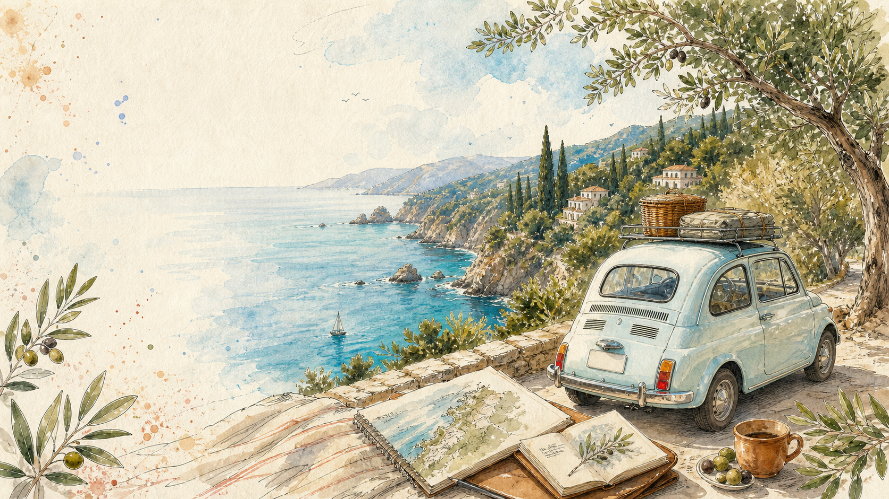
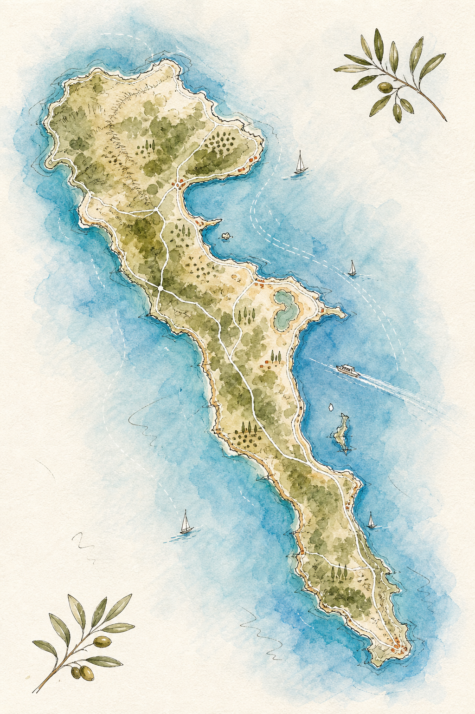
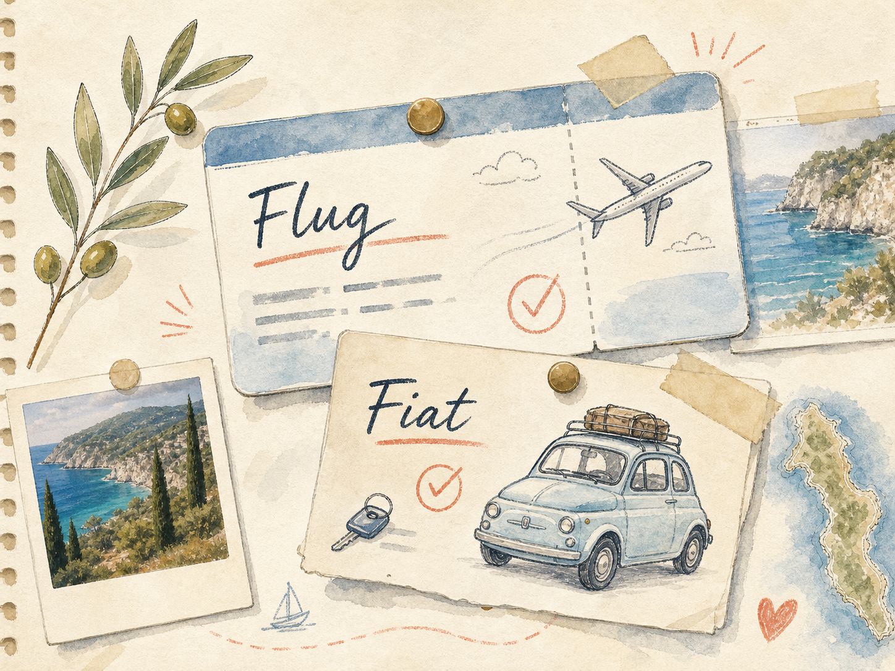

Unser Modus
Fiat schnappen, ans Wasser, quer ueber die Insel und abends entscheiden: ruhig oder lebendig.

16. bis 21. - Inselmodus
Unsere Woche: Norden, Sueden, Strandpausen, Fiat und die Orte, die wir uns merken wollen.
Fiat schnappen, ans Wasser, quer ueber die Insel und abends entscheiden: ruhig oder lebendig.
Flug und Auto sind die Anker. Der Rest darf sich nach Wetter, Laune und Hunger bewegen.
Milo bleibt zuhause. Dafuer gibt es danach Extra-Aufmerksamkeit und wahrscheinlich zu viele Fotos.
Corfu Map

Reiseguide
Klick auf eine Polaroid-Karte oder einen Pin auf der Map: Foto, GPS, Story, Notizfeld und Stempel. Was abgestempelt ist, bleibt gespeichert (lokal im Browser).
Norden
Weisse Klippen, wilder Blick, besser laufen als den letzten Dirt-Track mit dem Auto erzwingen.
Strand / AussichtUnterkuenfte
Sidari - Norden - nah an Sidari Beach und Canal d'Amour.
Barbati/Pyrgi - Ostkueste - unterhalb Pantokrator, direkt in eurer Map markiert.
Mesongi - Suedostkueste - knapp hinter Messonghi Beach.
Kavos - Suedspitze - nahe Arkoudilas Beach und Gardenos-Richtung.
Fixpunkte

Unsere Sammlung
Ein Tag Norden: Sidari, Canal d'Amour, kleine Buchten, Sonnenuntergang suchen.
Ein Tag Suedosten: Mesongi, Wasser, Tavernen, langsam machen.
Ein Tag Sueden: Kavos als Ausgangspunkt, Arkoudilas Beach als rauerer Spot und danach mit dem Fiat zurueck.
Milo bekommt nach der Reise die volle Foto-Show und wahrscheinlich eine Ausrede, warum er nicht mitdurfte.